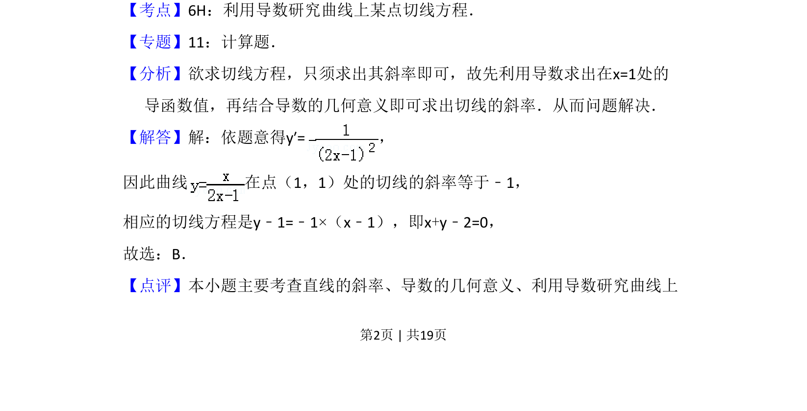

考点：导数 切线方程 导数几何意义
利用导数求函数在点(1,1)处的切线斜率与方程

📄 原 PDF 第 2 页：
素材/真题/吉林/2008-2024·（吉林）数学高考真题/2009年高考数学试卷（理）（全国卷Ⅱ）（解析卷）.pdf
4．（5分）函数 在点（1，1）处的切线方程为（ ） A．x﹣y﹣2=0 B．x+y﹣2=0 C．x+4y﹣5=0 D．x﹣4y+3=0
【考点】6H：利用导数研究曲线上某点切线方程．菁优网版权所有 【专题】11：计算题． 【分析】欲求切线方程，只须求出其斜率即可，故先利用导数求出在x=1处的 导函数值，再结合导数的几何意义即可求出切线的斜率．从而问题解决． 【解答】解：依题意得y′=， 因此曲线 在点（1，1）处的切线的斜率等于﹣1， 相应的切线方程是y﹣1=﹣1×（x﹣1），即x+y﹣2=0， 故选：B． 【点评】本小题主要考查直线的斜率、导数的几何意义、利用导数研究曲线上